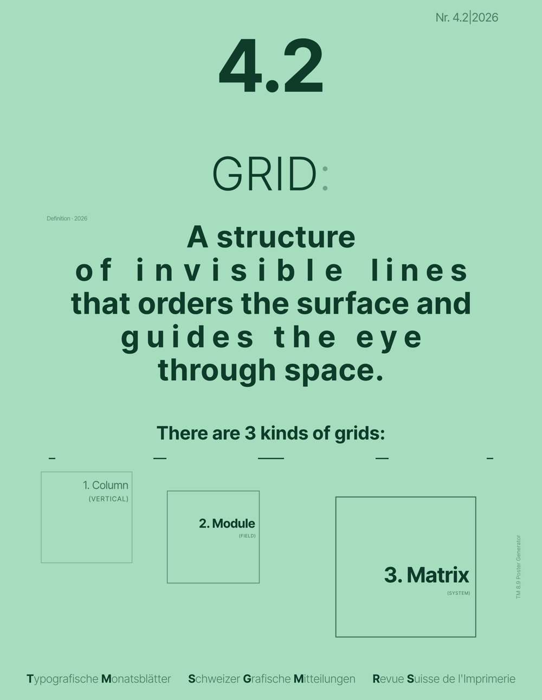
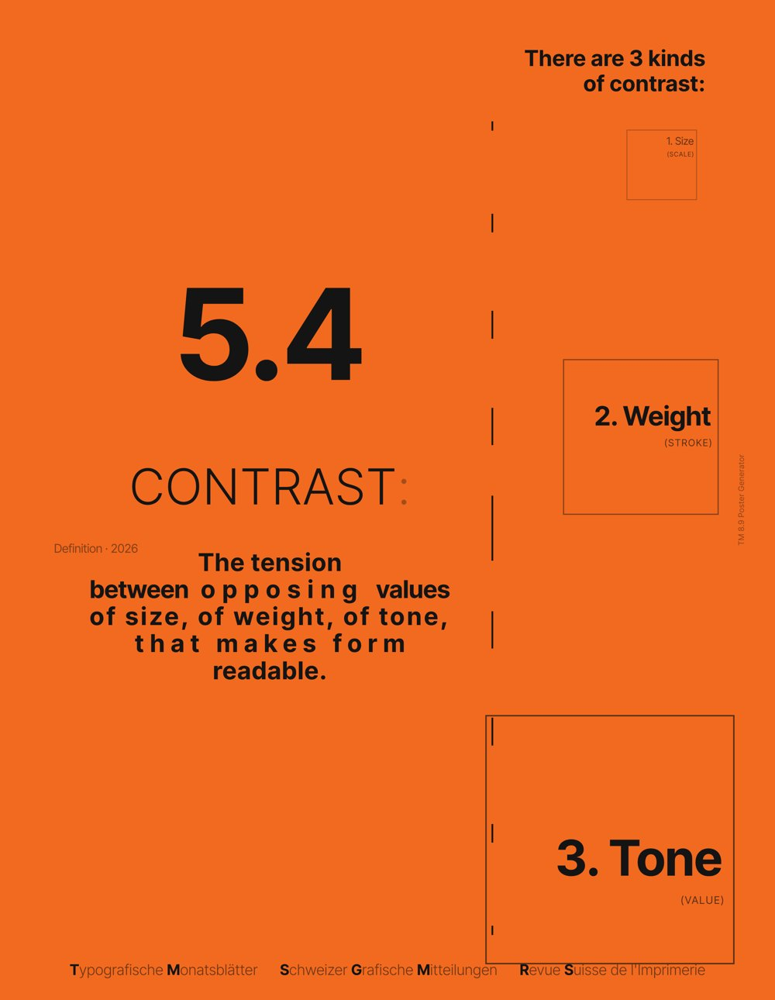
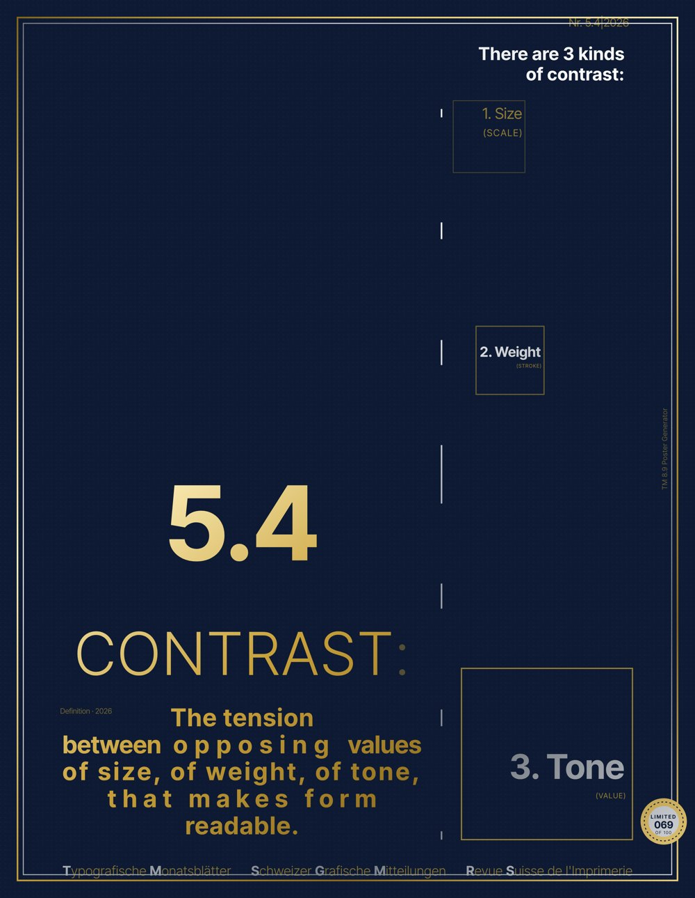
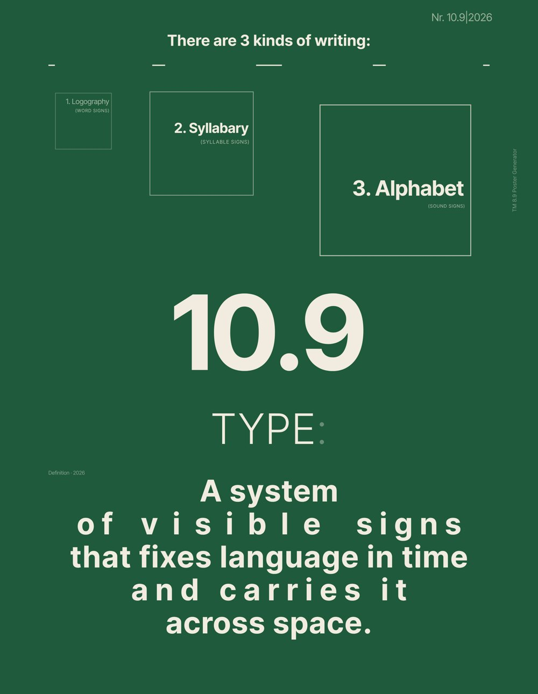
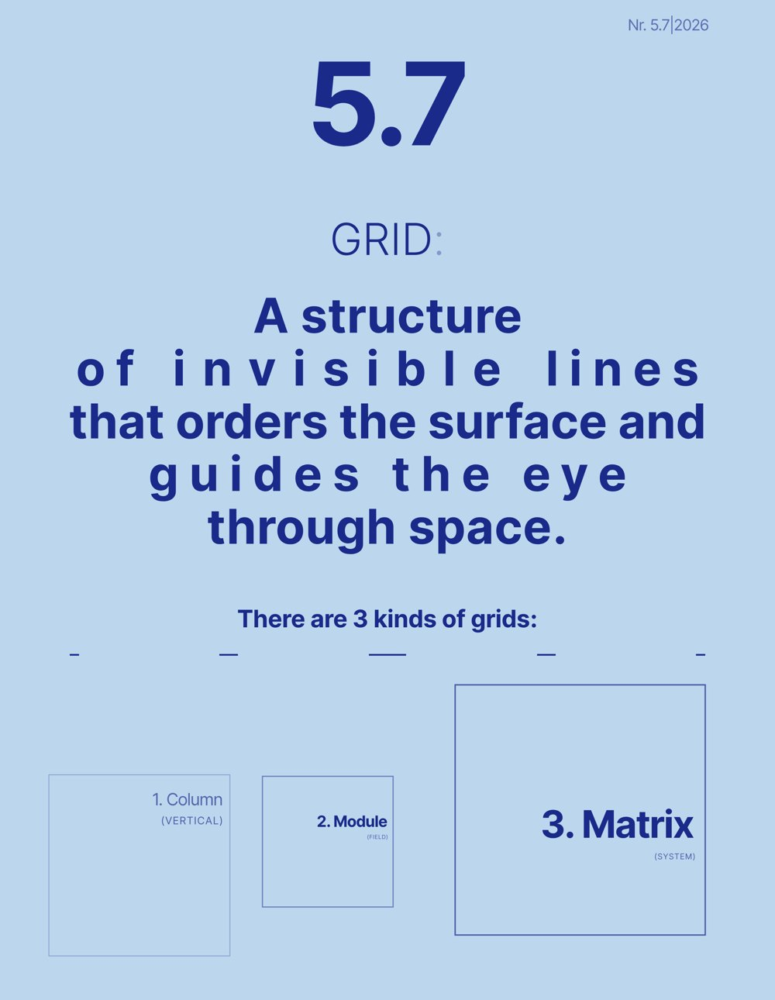
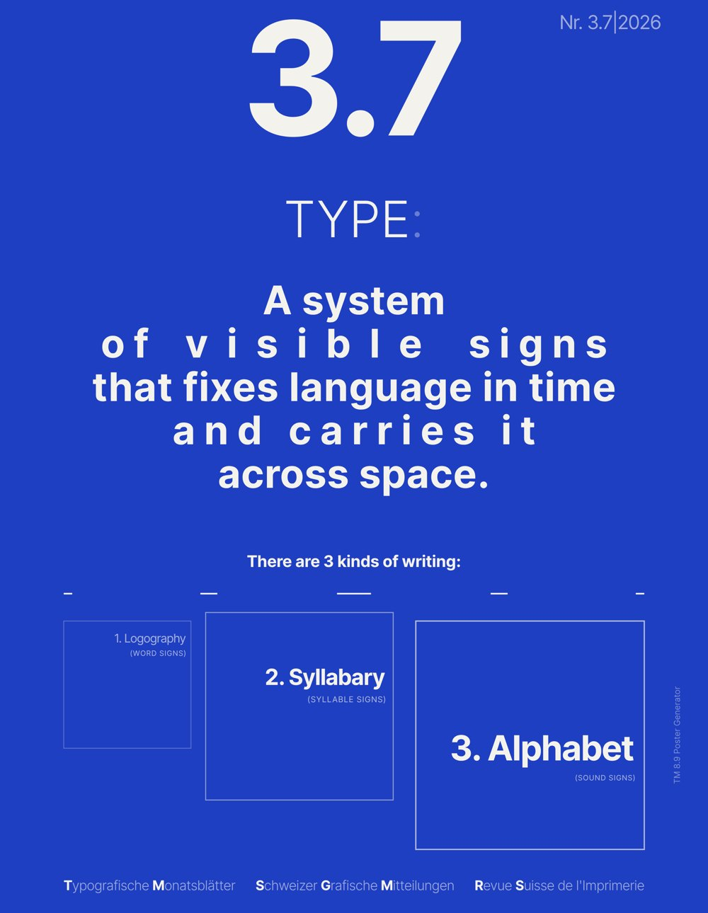

Typography module · Poster Generator · Homework 6.1 + 6.2
My generator makes posters in the style of the 1972 Typografische Monatsblätter 8.9 "Schrift" cover. This page collects sample posters exported from the final version, explains how the tool changed from v1 to v2 to final, and links the markdown files that drive it.
Exported as PNG straight from the final generator using Generate, Shuffle text and Limited edition. The original 1972 cover is linked under Markdowns.






How the generator changed over the typography module.
Version 1 was a straight translation of my skills.md rules into an app: it rebuilt the TM 8.9 cover and could shuffle text, change the seed and export, but every poster came out cream with the same layout, so the results felt like copies of one poster. For version 2 I used the professor's slides and feedback to open up the system without breaking the style rules. I added 16 ink-and-paper colour pairs, moveable title and diagram positions, a 0–5 box count, US print sizes, dragging elements by hand and images inside the boxes. That made the posters actually different from each other. The final version focused on control and finish: an Elements panel to hide or resize any part, undo/redo, a Series tray to save and export a set, a Limited edition button that makes gold and silver foil posters with a numbered seal, and a Generate button that also re-rolls element sizes, with a Lock to keep the ones I like. Across all three versions the rules in skills.md stayed the same; what changed is how much of the system the user can explore.
skills.md. Seeded Generate, seed lock, Shuffle text, 9 variations, font upload, SVG / PNG / PDF export.The files I gave the AI to build and maintain the generator.
skills.md.